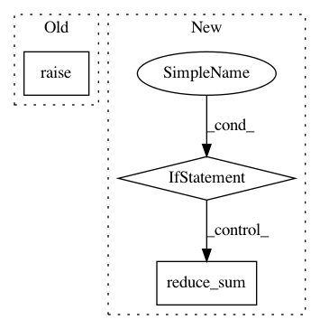

f09b1d753bff6d85b32b52f01f4dee86511f3dbb,tensorforce/core/networks/layer.py,Conv2d,tf_regularization_loss,#Conv2d#,429
Before Change
def tf_regularization_loss(self):
if self.l2_regularization == 0.0:
return super(Conv2d, self).tf_regularization_loss()
if super(Conv2d, self).tf_regularization_loss() is None:
losses = list()
After Change
if self.bias is not None:
losses.append(self.l2_regularization * tf.nn.l2_loss(t=self.bias))
if self.l1_regularization > 0.0:
losses.append(self.l1_regularization * tf.reduce_sum(input_tensor=tf.abs(x=self.filters)))
if self.bias is not None:
losses.append(self.l1_regularization * tf.reduce_sum(input_tensor=tf.abs(x=self.bias)))
if len(losses) > 0:
return tf.add_n(inputs=losses)
else:
return None
In pattern: SUPERPATTERN
Frequency: 3
Non-data size: 3
Instances
Project Name: reinforceio/tensorforce
Commit Name: f09b1d753bff6d85b32b52f01f4dee86511f3dbb
Time: 2017-10-21
Author: aok25@cl.cam.ac.uk
File Name: tensorforce/core/networks/layer.py
Class Name: Conv2d
Method Name: tf_regularization_loss
Project Name: reinforceio/tensorforce
Commit Name: f09b1d753bff6d85b32b52f01f4dee86511f3dbb
Time: 2017-10-21
Author: aok25@cl.cam.ac.uk
File Name: tensorforce/core/networks/layer.py
Class Name: Linear
Method Name: tf_regularization_losses
Project Name: IndicoDataSolutions/finetune
Commit Name: fb47e1487886b33181b459dfe91b67e20a96b8f7
Time: 2020-01-10
Author: lily.zhang@indico.io
File Name: finetune/target_models/comparison_regressor.py
Class Name: ComparisonRegressor
Method Name: _target_model